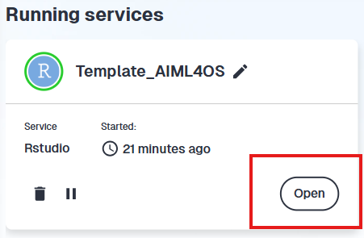
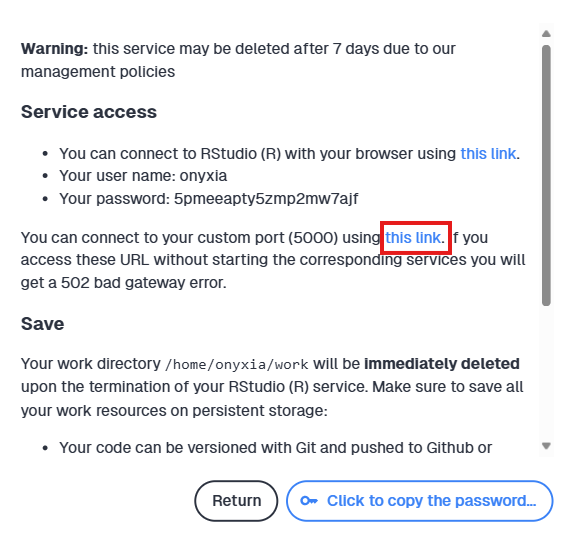

Creating and disseminating educational resources for SSPCloud users
Startup guide
This tutorial aims to be a practical guide for people developing educational resources in or Python and wishing to disseminate them easily through the SSPCloud.
To make this possible, a few technical prerequisites are needed - these are outlined in Important 1.
The aim of this tutorial is to get you started quickly on building educational resources with a state-of-the-art level of reproducibility. The next sections explain how to develop educational resources, and how to disseminate them on the SPPCloud. Keep in mind that this tutorial is intended for people developing resources, not for the users of these resources.
- A minimum level of proficiency in
Gitis required to develop and make available online training resources. However, accessing to these resources on the SSPCloud does not require any familiarity with Git. Quartothe automated report and website builder inherited from R Markdown.- An understanding of the fundamental difference between making resources available for execution on a local computer or on a server like
SSPCloud. SeeSSPClouddocumentation. - Some knowledge regarding deployment of resources using
Github Actionsis useful. This tutorial gives a few templates but understanding what is happening behind the stage is not in the scope of that tutorial.
2 Which materials should be used for trainings?
When designing effective training materials, it’s essential to choose formats that actively engage learners and support comprehension. While PDFs, slide decks, and videos are all valuable for delivering content, this guide focuses on interactive environments, which are particularly well-suited for hands-on learning. These environments enable learners to apply concepts immediately, test code in real time, and actively engage with the material—leading to deeper understanding and better long-term retention.
In the sections that follow, we’ll begin by comparing various interactive environments based on the programming language they support. Then, we’ll walk through how to build and structure them using Quarto.
2.1 Which interactive environment should you use ?
Jupyter notebooks1 offer an interactive interface that allows you to write Python code, test it, and see the result below the instruction rather than in a separate console. Jupyter notebooks are essential in the fields of data science and education and research because they greatly simplify exploration and experimentation.
They allow you to combine text in Markdown format (a lighter markup text format than HTML or \(\LaTeX\)), Python code, and HTML code for visualizations and animations in a single document.
Initially, Jupyter Jupyter. For this reason, as of 2025, we recommend developing resources with VSCode Python, rather than with Jupyter. For more information on using notebooks in VSCode, refer to the official documentation.
Although we recommend developing resources with Vscode rather than with Jupyter, final users will be able to open your educational resources with Jupyter if they want to.

Jupyter 
VSCode In , notebooks are not commonly used - even though they offer several features that are particularly valuable for educational purposes.
When designing -based training materials, two main options are available, each with its own pros and cons:
- Providing access to an HTML website
- Advantages: Solutions to exercices can be hidden, interactive widgets can be used to offer hints or guide learners step by step, and the layout is optimized for reading.
- Drawbacks: This is not an interactive environment—learners must open a separate RStudio session to try out the code, which can disrupt the flow of learning.
- Providing access to a Quarto Markdown (.qmd) file
- Advantages: Fully interactive—learners can run code directly within the environment, benefiting from live feedback and hands-on practice.
- Drawbacks: All answers and code are visible by default, which may reduce engagement and exploratory effort from the learners.
Since the first option can become cumbersome - especially when learners need to copy and paste large blocks of code - it is generally recommended to use the second option in most cases. Providing direct access to a Quarto Markdown file helps minimize the risk of hard-to-reproduce errors that often arise when learners switch between an HTML tutorial and their R session.

learnr Is Not Recommended
While learnr allows for the creation of interactive and advanced elements such as quizzes—making it well-suited for beginner tutorials—it has some important limitations.
First, it requires deployment on a Shiny server, which can be costly and complex to maintain. Additionally, in learnr, code cells do not share a global environment. This means variables and objects created in one chunk are not accessible in others, making it difficult to manage state or build on previous steps.
These restrictions limit the usefulness of learnr for more complex tutorials, where maintaining continuity and evolving context across the tutorial is essential.
2.2 Introducing Quarto
Quarto is an open source program for creating Python and reproducible tutorials. It makes it possible to mix seamlessly code and text in the same document and can handle many output formats, including html, pdf or notebook (.ipynb extension). Quarto is strongly recommended for the development of educational resources.

This tutorial assumes that educational resources and training material will be made available in two forms:
Quartowebsites, mixing text and code chunks;- Interactive environment (see ☝️)
3 A step-by-step tutorial
3.1 Step 1: create a Github repository from a template
3.1.1 What are templates and why use them?
The very first step towards developing educational resources consists in creating a Github repository that will contain them all. We recommend that you use the templates developed specifically for the AIML4OS project. There are two different templates, depending on the language you want to use:
These templates contain all what you need to produce resources that can be easily made available as websites or as interactive environments on the SSP Cloud. More precisely, these templates contain:
- a minimal Quarto website with graphical elements reflecting AIML4OS aesthetic;
- a minimal example of a Quarto document producing a Jupyter Notebook (
Pythononly); - a minimal example of a Quarto document mixing Markdown text and
Rcode ( only); - what is needed to manage dependencies (what packages are needed to run the codes, and in which version);
- scripts for Github Actions workflow for automated deployment (don’t be afraid, see below!).
You can still use the templates - just remove the style components using AIML4OS aesthetic.
3.1.2 How to use a template?
Here is what to do to re-use a template:
- Go to the
Githubpage of the chosen template; - Click on the “Use this template” button and then on “Create a new repository” (see screenshot);

- Choose carefully the owner and the name of the new repository:
- Owner: by default the owner is the creator of the fork, but it may be preferable to choose a Github organization (for instance the
AIML4OSorganization); - Name: give the repository a meaningful name, for instance “Intro_To_Deep_Learning” or “Intro_To_Linear_Regression”.
- Owner: by default the owner is the creator of the fork, but it may be preferable to choose a Github organization (for instance the
3.2 Step 2: define your development configuration on the SSPCloud
SSPCloud is not only useful to disseminate educational resources; it is also the right place to develop them. Doing so will facilitate resource dissemination as the environment used for training will be equivalent to the one used for development. In other words, we strongly recommend that you develop on the SSPCloud because this will help a lot to make your educational resources reproducible.
3.2.1 How to define a configuration
The best way to develop resources on the SSP Cloud is to define your own development configuration. If you define a configuration, you can come back to the SSP Cloud any time and resume developing your resources in only one click. Defining a configuration may seem complicated the first time you do it, but you will get used to it in no time.
Here is how to define a development configuration the SSP-Cloud.
- Go the “My Services” Tab and click on “New Service”;
- Choose Rstudio and click Launch;
- Customize the configuration by changing three settings:
- In the “Friendly Name” field, choose a meaningful name (for instance
dev_Intro_To_Linear_Regression);
- In the “Repository” field of the “Git” tab, paste the URL of the repository you created in step 1 (for instance:
https://www.github.com/AIML4OS/Intro_To_Linear_Regression); - In the “Network Access” tab, enable access to your service through port 5000.
- In the “Friendly Name” field, choose a meaningful name (for instance
- Click on Save configuration;
- Click on Launch;
- Open the Rstudio service;
- Rename the Rproj file with a meaningful name (for instance
Intro_To_Linear_Regression.Rproj); - Click on the Rproj file to open the RStudio project;
- You’re all set!
- Go the “My Services” Tab and click on “New Service”;
- Choose
Vscode-r-python-juliaand click Launch; - Customize the configuration by changing three settings:
- In the “Friendly Name” field, choose a meaningful name (for instance
dev_Intro_To_Linear_Regression);
- In the “Repository” field of the “Git” tab, paste the URL of the repository you created in step 1 (for instance:
https://www.github.com/AIML4OS/Intro_To_Linear_Regression); - In the “Network Access” tab, enable access to your service through port 5000.
- In the “Friendly Name” field, choose a meaningful name (for instance
- Click on Save configuration;
- Click on Launch;
- Open the Vscode service;
- You’re all set!
3.2.2 How to use an existing configuration
Once a configuration is defined, using it is very easy and very fast:
- Go the “My Services” Tab;
- On the right side of the screen, find the configuration of your project and click on Launch;
- Open the Rstudio service;
- Click on the Rproj file to open the RStudio project;
- You’re all set!
- Go the “My Services” Tab;
- On the right side of the screen, find the configuration of your project and click on Launch;
- Open the VSCode service;
- You’re all set!
3.3 Step 3: develop resources
If you have created a repository from a template and defined a development configuration, developing resources basically means to modifying and extending the minimal examples available in your repository.
3.3.1 Developing a website
You can develop you website by writing text and code chunks in the existing qmd files (index.qmd and chapter1.qmd). You can also extend the structure of the website by adding new Quarto documents (in the chapters subdirectory). These new documents must then be added to the website by modifying the _quarto.yml file in two places: in the render argument, and in the contents of the sidebar argument.
If your resources include a website, it is convenient to have a look at what this website looks like while developing it. You can preview your website from command line by executing:
quarto preview --port 5000 --host 0.0.0.0Then go to https://datalab.sspcloud.fr/my-services, open the README of the service you are using and click on the link to the external port.


If you can’t access the website preview because there is no link in the README, it is likely that you forgot to open port 5000 in your configuration. This is easily solved:
- Close your RStudio/VSCode service (after committing and pushing all changes!);
- Modify your configuration: in the “Network Access” tab, enable access to your service through port 5000 and save this new configuration;
- Launch again your RStudio/VSCode service.
3.3.2 Developing interactive scripts
3.3.2.1 R
A compléter sur Quarto/R
Importantly, the function install.packages() must not be used anywhere in the documents because it is not the proper way to manage package requirements (see below for recommendations on dependency management).
3.3.2.2 Python
A compléter sur Notebooks Python.
It makes more sense to provide your learners with a Jupyter notebook. To generate it, you can write
quarto render --to ipynbNotebooks will be written in the _site folder
3.3.3 What you should do at all times when developing resources
It is essential that you commit and push your changes on a regular basis (every 30 minutes or so), because your service (Rstudio or VScode) is not persistent, meaning that any changes that were pushed before closing the service are permanently lost.
Gérer les dépendances: à compléter par Lino
3.4 Step 4: set up a Github pages website
This step is optional, depending on whether your resources include a website. You can skip this step if your resources consist only in interactive environments (Jupyter notebooks for Python, interactive Quarto documents with R chunks for R).
3.4.1 What are Github Actions and Github pages and why are they useful?
If you are developing a website for educational purposes, you probably want to publish it online. If you do the publication step manually (building the website, then publishing it), you’ll have to re-do this series of tasks every time you change your website. This is time consuming, repetitive and boring. But fortunately, you can automate this process thanks to GitHub Actions and Github Pages:
- GitHub Actions is a tool built into GitHub that run pre-defined tasks like testing, building, and deploying code when specific events occur in a repository. For instance, GitHub Actions may perform a series of task every time you push on the
mainbranch of your repository, without you doing anything manually. - GitHub Pages is a another tool from Github that lets you publish static websites directly from a GitHub repository; it is often used for project documentation or personal portfolios.
The main message is: by combining GitHub Actions with GitHub Pages, you can set things up so that every time you make changes to your repository, GitHub Actions automatically updates your website and publishes it on GitHub Pages. This will save you a lot of time!
3.4.2 Create the gh-pages branch
When developing resources, you will most likely use the main branch. However, for Github Actions to work, you need an additional branch gh-pages used by Github to deploy websites. This one will be rewritten automatically by Github after every Github Actions workflow. However, you need to create it first. This should be done only once. Quarto documentation gives this command to create that branch. Be careful with that command, do not use before having done a first push on Github.
git checkout --orphan gh-pages
git reset --hard # make sure all changes are committed before running this!
git commit --allow-empty -m "Initialising gh-pages branch"
git push origin gh-pages3.4.3 Define a Github Actions workflow
You need to define a Github Actions workflow to automate output construction and deployment. A GHA workflow is a list of instructions (for instance: install R, install packages…) that are executed automatically every time a certain event happens (for instance every time you push on the main branch). A GHA workflow is defined using specific yaml scripts, located in the .github/workflows directory of your repository. The templates already contain standard workflows that you can use as a starting point.
A few important remarks on automated deployment:
- The website is deployed at an URL that depends on the owner and the name of the repository:
https://{REPO_OWNER}.github.io/{REPO_NAME}/. - You can monitor Github Actions jobs in the “Actions” tab of the Github repository of your project. Do not be afraid if your jobs fail at first; getting Github Actions to work often requires some debugging.
3.5 Step 5: make your interactive environments easily available on the SSP Cloud
This step is optional, depending on whether your resources include interactive environments (Jupyter notebooks for Python, interactive Quarto documents with R chunks for R). You can skip this step if your resources consist only in a Quarto website.
A compléter avec Inès
Footnotes
Jupyteroriginated from theIPythonproject, an interactive environment forPythondeveloped by Fernando Pérez in 2001. In 2014, the project evolved to support other programming languages in addition to Python, leading to the creation of the Jupyter project. The name “Jupyter” is an acronym referring to the three main languages it supports:Julia,Python, andR.Jupyternotebooks are crucial in the fields of data science and education and research because they greatly simplify exploration and experimentation.↩︎